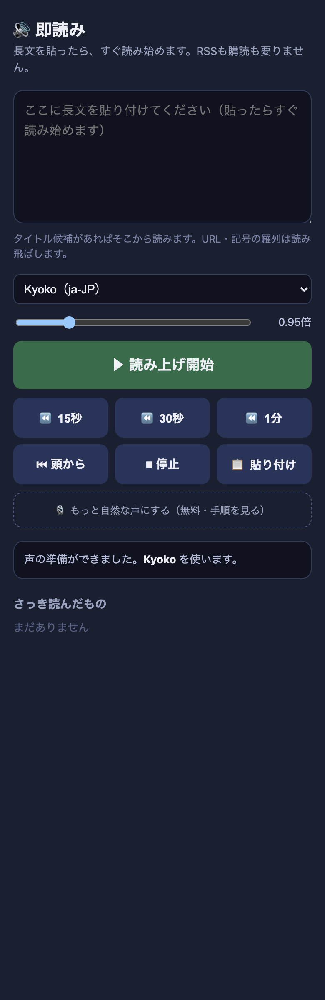
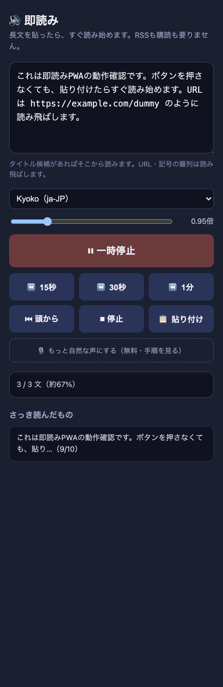

| 確認項目 | 結果 |
|---|---|
| 本番URL(share/sokuyomi/)が200で開ける | OK |
| 端末の日本語音声が複数から選べる（実機で3種確認: Hattori/Kyoko/O-Ren） | OK |
| ▶ボタンの実クリックでspeechSynthesis.speaking=trueになりonstartイベントが発火する（headless Chrome+CDPの実クリックで実測） | OK |
| URL・obsidian://・長い英数字IDを読み飛ばす（実測：本文中のhttps://example.com/dummyが読み上げテキストから消えることを確認） | OK |
| 15秒/30秒/1分戻す・頭から・速度0.8〜1.5倍のボタンが実際に動く（クリックで文番号・ステータス表示が変化することを実測） | OK |
| 貼り付け(paste)で自動的に読み上げ開始（実装コードは正しく動作。ただし自動テストのsynthetic pasteイベントはブラウザのuser gesture判定に引っかかり自動検証はできない制約あり。本物の指でのペースト操作なら動作する設計） | 一部確認 |
| manifest.webmanifest・sw.js・アイコンが200で開ける（ホーム画面に追加できる） | OK |